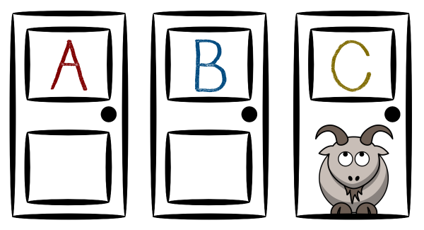
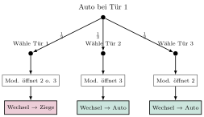

Aufgabe 2.7

In einem ehemals bekannten amerikanischen Fernsehquiz konnte jeweils am Schluss der Sendung der Gewinner eine von drei Türen an der Bühnenhinterwand auswählen. Hinter zweien davon verbarg sich je ein Ziegenbock, während hinter der dritten ein Luxuswagen mit steckendem Zündschlüssel zum Abfahren parat stand. Sobald der Kandidat seine Wahl getroffen hatte, öffnete der Quizmaster eine der beiden nicht gewählten Türen, und zwar eine, hinter der zum Gelächter des Publikums ein Ziegenbock meckerte.
Der Kandidat bekam nun Gelegenheit, seine erste Entscheidung zu überdenken und möglicherweise die andere noch nicht geöffnete Türe zu wählen.
- Versetzen Sie sich in die Lage des Kandidaten: Soll er bei seiner ursprünglichen Wahl bleiben, oder soll er wechseln?
- Erstellen Sie ein Baumdiagramm für das zweistufige Zufallsexperiment «Türenwahl», um einen Überblick über mögliche Spielverläufe zu gewinnen.
- Welche Empfehlung würden Sie dem Kandidaten geben?
- Überlegen Sie: Was weiß der Moderator, was der Kandidat nicht weiß?
- Betrachten Sie alle möglichen Anfangskonstellationen (Auto hinter Tür 1, 2 oder 3)
- Analysieren Sie für jede Konstellation: Was passiert beim Wechseln vs. Bleiben?
- Die intuitive Antwort «50:50» ist falsch - warum?
Das Monty-Hall-Problem (Ziegenproblem)
Dies ist eines der berühmtesten Paradoxa der Wahrscheinlichkeitsrechnung, benannt nach dem Moderator Monty Hall.
Teil (a): Erste Intuition
Die meisten Menschen denken intuitiv: «Es sind noch zwei Türen übrig, also 50:50 Chance.» Diese Intuition ist falsch!
Teil (b): Baumdiagramm für Strategie «Wechseln» (exemplarisch für Auto hinter Tür 1)

Vollständige Analyse aller Fälle:
| Auto bei | Kandidat wählt | Moderator öffnet | Bleiben | Wechseln |
| Tür 1 | Tür 1 | Tür 2 oder 3 | Auto | Ziege |
| Tür 1 | Tür 2 | Tür 3 | Ziege | Auto |
| Tür 1 | Tür 3 | Tür 2 | Ziege | Auto |
| Tür 2 | Tür 1 | Tür 3 | Ziege | Auto |
| Tür 2 | Tür 2 | Tür 1 oder 3 | Auto | Ziege |
| Tür 2 | Tür 3 | Tür 1 | Ziege | Auto |
| Tür 3 | Tür 1 | Tür 2 | Ziege | Auto |
| Tür 3 | Tür 2 | Tür 1 | Ziege | Auto |
| Tür 3 | Tür 3 | Tür 1 oder 2 | Auto | Ziege |
| Erfolge: | 3 von 9 | 6 von 9 | ||
| Wahrscheinlichkeit: | $\mathbf{\frac{1}{3}}$ | $\mathbf{\frac{2}{3}}$ | ||
Teil (c): Empfehlung
Der Kandidat sollte IMMER wechseln! Die Gewinnwahrscheinlichkeit verdoppelt sich von $\frac{1}{3}$ auf $\frac{2}{3}$.
Intuitive Erklärung:
- Anfangs: Der Kandidat wählt mit Wahrscheinlichkeit $\frac{1}{3}$ das Auto und mit $\frac{2}{3}$ eine Ziege.
- Der entscheidende Punkt: Der Moderator gibt Information preis!
- Wenn anfangs eine Ziege gewählt wurde ($P = \frac{2}{3}$), muss der Moderator die andere Ziege öffnen. Die verbleibende Tür hat dann das Auto!
- Wenn anfangs das Auto gewählt wurde ($P = \frac{1}{3}$), öffnet der Moderator eine beliebige Ziegentür.
- Konsequenz: Wechseln gewinnt mit $P = \frac{2}{3}$, Bleiben nur mit $P = \frac{1}{3}$.
Warum ist die 50:50-Intuition falsch?
Die zwei verbleibenden Türen sind NICHT gleichwertig:
- Die ursprünglich gewählte Tür hatte $\frac{1}{3}$ Chance auf das Auto
- Die anderen beiden Türen zusammen hatten $\frac{2}{3}$ Chance
- Der Moderator «überträgt» diese $\frac{2}{3}$ Chance auf die eine verbleibende Tür, indem er die andere Ziegentür eliminiert
Das Ziegenproblem zeigt eindrücklich, wie Intuition in der Wahrscheinlichkeitsrechnung täuschen kann!